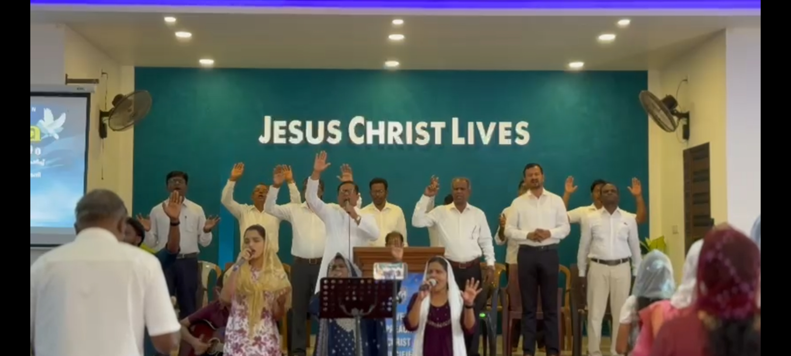
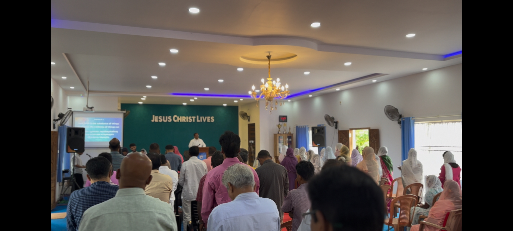
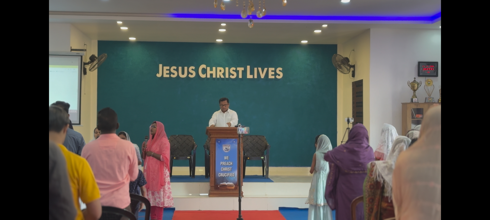
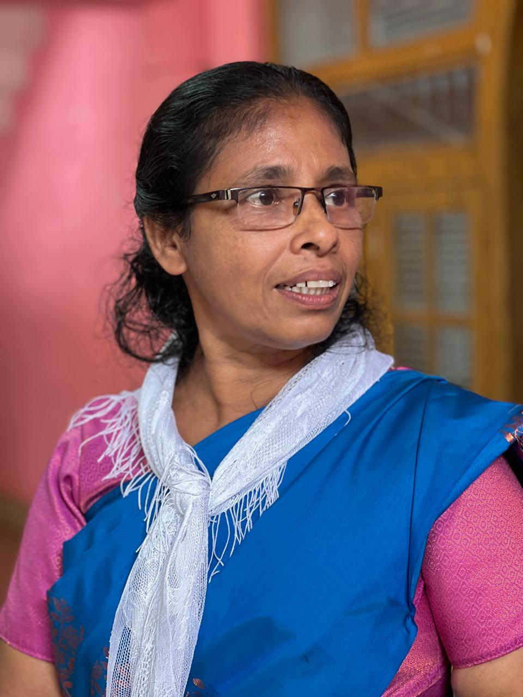

"The Lord is my shepherd; I shall not want. He makes me lie down in green pastures."
Psalm 23:1–2
Join Us
Weekly Services
Sunday
Sunday School
🕘 9:00 AM – 10:00 AM
In-Person
Sunday
Sunday Worship Service
🕙 10:00 AM – 12:30 PM
In-Person
Tuesday
WMC Meeting
🕖 7:00 PM
Online · Google Meet
Wednesday
Cottage Meeting
🕖 7:00 PM
In-Person
Thursday
Youth Meeting
🕖 7:00 PM
Online · Google Meet
Friday
Fasting Prayer
🕙 10:00 AM – 1:00 PM
In-Person
Saturday
Intercessory Prayer
🕖 7:00 PM
In-Person
Testimonies
Lives Transformed by Grace
"
Coming to Mount Carmel AG Church changed my life. The warmth of the community and the depth of the teaching brought me closer to God than I ever thought possible.
— Sarah M., Member since 2019
"
The youth ministry here gave my children a solid foundation of faith. We are so grateful for Pastor Shiju and the entire leadership team's dedication.
— Thomas K., Parent
"
The prayer group at Mount Carmel AG Church has been a lifeline for our family. When we faced a crisis, this church wrapped us in love and faithful intercession.
— Reena P., Member
What's Coming
Events & Announcements
04
Apr
Children's One-Day Retreat Program
Special service · 10:00 AM | A special one-day retreat for children on 4th April to learn, grow, and enjoy in a faith-filled environment.
05
Apr
Easter Sunday
Special service · 10:00 AM | All are welcome
25
Apr
Convention Day-1
Special service · 6:00 PM | Join us for Convention Day 1, where Pr. Thomas Kumaly will be ministering and worship will be led by the Powervision Team.
26
Apr
Convention Day-2
Special service · 6:00 PM | Join us for Convention Day 2, where Pr. Thomas Kumaly will be ministering and worship will be led by the Powervision Team.
Messages
Recent Sermons
▶
Walking in the Light of His Word
Pr. Shiju Mathai · March 23, 2025 · John 8:12
▶
The Power of Intercessory Prayer
Pr. Shiju Mathai · March 16, 2025 · 1 Timothy 2:1–4
▶
Faith That Moves Mountains
Pr. Shiju Mathai · March 9, 2025 · Matthew 17:20
▶
Rooted in Love, Grounded in Grace
Pr. Shiju Mathai · March 2, 2025 · Ephesians 3:17
Our Community
Photo Gallery



Photos from worship gatherings, community events, and ministry programs
"Come to me, all you who are weary and burdened, and I will give you rest."
Matthew 11:28
Plan Your Visit
We're so glad you're considering joining us. Here's everything you need to know.
First Time Here?
What to Expect
1
Arrive & Be Welcomed
Greeters will welcome you at the door. Arrive a few minutes early to find a comfortable seat. Free parking is available.
2
Worship Together
We begin with praise and worship. Feel free to participate or simply listen. The atmosphere is warm, joyful, and welcoming to all.
3
Hear the Word
Pastor Shiju Mathai delivers messages rooted in Scripture — practical, relevant, and encouraging for every stage of life.
4
Connect with the Family
Stay for tea and fellowship after service. Our members would love to meet you and answer any questions you have.
Practical Info
Before You Come
👗 Dress Code
Come as you are! Smart casual is the norm, but there is no strict dress code. What matters is your heart, not your clothes. You will be welcomed regardless.
👨👩👧 Children & Families
Children are warmly welcome in all services. Sunday School runs 9–10 AM especially for children. A caring, nurturing environment is provided for little ones.
🅿️ Parking
Free parking is available on church grounds. Please arrive 10–15 minutes early on Sundays for the best experience.
📱 During Service
Please switch your phone to silent mode. Feel free to use a Bible app during the sermon — it's encouraged!
Find Us
Directions
📍
Mount Carmel AG Church
Peringome, India
🕙
Best Time to Visit
Sunday Morning Service · 10:00 AM – 12:30 PM is our main gathering — perfect for first-time visitors.
💬
Have Questions?
Reach out via WhatsApp or visit our Contact page. We're happy to help before your first visit.
About Us
Rooted in faith. Growing in love. Reaching the world.
Who We Are
Our Story
Mount Carmel AG Church was founded on the bedrock of Scripture and a burning desire to see lives transformed by the power of the Holy Spirit. What began as a small gathering of believers meeting in homes has grown into a vibrant, Spirit-filled community serving Kerala and beyond.
We are a church that believes in the full Gospel — salvation, healing, and the gifts of the Spirit — and we are committed to making disciples who make disciples. Under the faithful leadership of Pastor Shiju Mathai and a dedicated team, our church continues to grow as we pursue God's presence, preach His Word, and extend His love through prayer, worship, and service.
Our Journey
Church History – Mount Carmel AG Church
In the year 2012, Pr. Shiju Mathai, along with his family, was led to Kannur from Hyderabad with a vision to serve the Lord and build a faith-centered community. By the grace of God and with the support of a few dedicated families, the church began its humble journey in February 2012, holding its first services in a rented house.
In those early days, the congregation was small, with just six family members gathering together in faith and unity. Despite these modest beginnings, their strong commitment, constant prayer, and unwavering trust in God laid a firm spiritual foundation for the ministry.
As time passed, the Lord continued to bless and add to the church. In 2014, by God's grace, the congregation was able to build a small church, marking a significant milestone in its journey. This step strengthened the fellowship and provided a dedicated place of worship for the growing community.
With a continued vision from God and a deep desire to expand His work, the church took further steps in faith to establish the present building. Through prayer, perseverance, and the support of believers, this vision became a reality.
Today, Mount Carmel AG Church stands as a testimony to God's faithfulness — growing from a small gathering of six families into a vibrant and welcoming church community. The journey reflects the power of faith, unity, and God's guiding hand in every step.
👨👩👧👦 Pr. Shiju Mathai & Family
Leading Mount Carmel AG Church with faith, vision, and dedication to God's work. The pastoral family is committed to shepherding this growing congregation with love and spiritual oversight.
Why We Exist
Mission & Vision
🎯 Our Mission
To love God with all our heart, serve one another with joy, and share the Good News of Jesus Christ with every person — in our neighbourhood, our nation, and to the ends of the earth.
👁 Our Vision
To be a Spirit-filled community where the broken find healing, the lost find purpose, the doubting find faith, and every believer grows into the fullness of Christ.
💎 Our Values
Prayer · Scripture · Community · Worship · Service · Holiness · Love
What We Believe
Our Core Beliefs
📖 The Holy Bible
We believe the Holy Scriptures are the inspired, inerrant Word of God and the final authority for faith and life.
✝ Salvation by Grace
Salvation is by grace alone, through faith alone, in Christ alone. We preach repentance, forgiveness, and new life in Jesus Christ.
🕊 The Holy Spirit
We believe in the present-day work and gifts of the Holy Spirit, including healing, prophecy, and speaking in tongues.
🙏 The Power of Prayer
Prayer is central to our life together. We believe God hears and answers prayer, and we pray with great expectation and faith.
Our Services
Join us throughout the week as we seek God together in worship, prayer, and fellowship.
Weekly Schedule
All Services at a Glance
Sunday
Sunday School
🕘 9:00 AM – 10:00 AM
Bible-based classes for children of all ages. A wonderful foundation in the faith for our youngest members.
In-Person · Children
Sunday
Sunday Worship Service
🕙 10:00 AM – 12:30 PM
Our main weekly celebration featuring praise, worship, and a message from Pastor Shiju Mathai. All are warmly welcome!
In-Person · All Ages
Tuesday
WMC Meeting
🕖 7:00 PM
Women's Ministry Committee gathering for prayer, fellowship, and planning. Conducted via Google Meet for accessibility.
Online · Google Meet
Wednesday
Cottage Meeting
🕖 7:00 PM
Intimate home-based gatherings for Bible study, prayer, and fellowship. Hosted in members' homes on a rotating basis.
In-Person · Home Groups
Thursday
Youth Meeting
🕖 7:00 PM
Shekinah Youth Ministries — a lively gathering for young people with worship, teaching, and growing together in Christ.
Online · Google Meet
Friday
Fasting Prayer
🕙 10:00 AM – 1:00 PM
A dedicated time of corporate fasting and prayer — seeking God's face and interceding for families, the nation, and the world.
In-Person · Prayer
Saturday
Intercessory Prayer
🕖 7:00 PM
Powerful intercessory prayer meeting. Come and stand in the gap for your family, community, and the body of Christ.
In-Person · Prayer
2nd Sunday
Christ Ambassadors
🕐 12:00 PM – 1:00 PM
Christ Ambassadors gathering held on the 2nd Sunday of every month. Join us for fellowship, spiritual growth, and equipping for effective evangelism and discipleship.
In-Person · Youth Meeting
"Not giving up meeting together, as some are in the habit of doing, but encouraging one another."
Hebrews 10:25
Our Ministries
Every ministry exists to glorify God and serve one another and the world around us.
Ministry Programs
Areas of Ministry
👩
Women's Ministry
WMC — Women's Ministry Committee
The WMC is a vibrant gathering of women seeking to grow in faith, support one another, and serve the community. Meetings are held every Tuesday at 7 PM via Google Meet. All women are warmly invited to join.
🔥
Youth Ministry
Shekinah Ministries
Shekinah Youth Ministries exists to ignite a passion for God in the next generation. Through worship, the Word, fun, and fellowship, we equip young people to live bold, Christ-centered lives. Youth meetings every Thursday at 7 PM.
✉️
Christ Ambassadors Ministry
Representing Christ in Every Sphere
This ministry calls every believer to be an ambassador of Christ — at work, at home, in the marketplace. We train and equip members for effective evangelism and discipleship in their daily lives.
📚
Sunday School
Nurturing Young Hearts
Our Sunday School runs every Sunday from 9–10 AM, providing age-appropriate Bible teaching for children. Our dedicated teachers instill a love for God's Word from the very earliest years.
❤️
Charity Ministry
Extending Grace to the Community
The Charity Ministry is the hands and feet of Jesus in our community. We organize food drives, visit hospitals, support the needy, and demonstrate the love of Christ through practical compassion.
🙏
Prayer Groups
Fasting Prayer & Intercessory Prayer
We hold corporate Fasting Prayer every Friday (10 AM – 1 PM) and Intercessory Prayer every Saturday at 7 PM. These prayer meetings are the engine room of our church — come and join us!
Serving Together
Leadership & Committee
Our leadership team is called to serve humbly, love faithfully, and lead by example. Each leader is committed to the vision of Grace Fellowship Church.
Pastoral Leadership
Lead Pastor / President
Pr. Shiju Mathai
Shepherd and President of Grace Fellowship Church. Called to preach the Word, lead the flock, and build a house of prayer. Passionate about revival, discipleship, and mission.
Church Committee
📋
Secretary
Br. Siby
Responsible for church administration, correspondence, minutes of meetings, and coordinating all church communications and official records.
Treasurer
Br. Sefin
Oversees the financial stewardship of the church — maintaining accounts, managing funds, and ensuring transparent and accountable financial reporting.
🤝
Committee Member
Br. Sunil
Serves on the church committee, contributing to decisions about ministry direction, church activities, and the welfare of the congregation.
⭐
Committee Member
Br. Papachan
Active member of the church committee, faithfully serving in planning, coordination, and supporting the broader vision of the church leadership.

Head Mistress
Sis. Jessy Jacob
Leads and manages Sunday School by guiding teachers, organizing lessons, and creating a positive learning environment for children.
✉️
Christ Ambassador Ministry
Bro. Jijo
Oversees Christ Ambassadors by coordinating programs, supporting youth, and fostering spiritual growth and leadership.
❤️
Charity Ministry
Bro. Joy
Oversees charity initiatives by managing donations, organizing outreach efforts, and serving the community with compassion.
👩
Women's Ministry
Sis. Sheeba Shiju
Oversees women's ministry by coordinating programs, nurturing faith, and promoting fellowship and service within the church.
Prayer Requests
"Cast all your anxiety on him because he cares for you." — 1 Peter 5:7
We're Here for You
Share Your Prayer Need
You do not have to carry your burdens alone. Our pastoral team and prayer warriors are here to stand with you in faith. Share your request and we will lift you up in prayer. God hears every prayer, and we believe in His power to heal, restore, and provide.